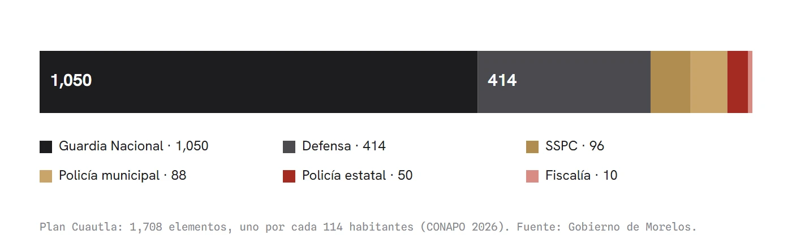
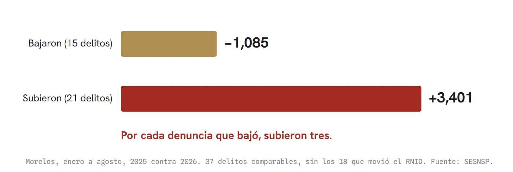
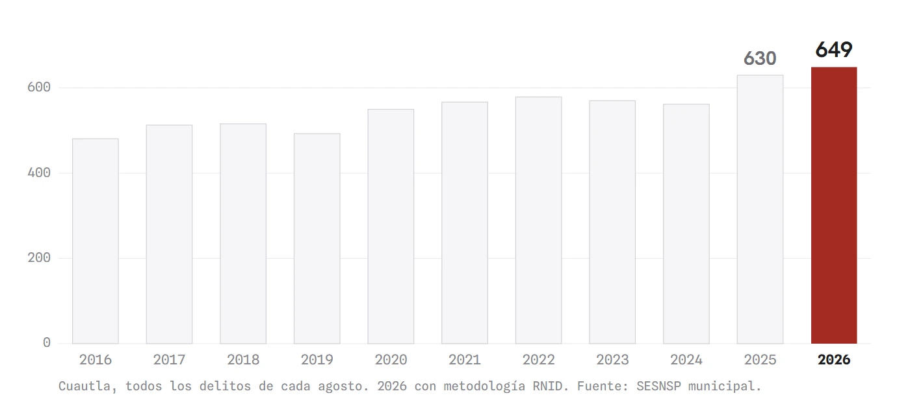

El teatro de los 1,708
El Plan Cuautla despliega 1,708 elementos, uno por cada 114 habitantes. En Cocoyoc se presumió que el homicidio bajó a la mitad; año contra año bajó 17%, y es real. Lo que no subió al escenario: todos los delitos juntos de Morelos pasaron de 30,337 a 33,069 de enero a agosto, y sin los delitos que movió la nueva metodología del SESNSP, por cada denuncia que bajó subieron tres. En Cuautla, agosto, el primer mes completo del plan, fue el más alto desde 2016. El costo del despliegue no se ha publicado: solo en sueldos de soldado, pasa de 32 millones de pesos al mes. Bruce Schneier le llamó a esto teatro de seguridad.
En Cuautla hay 1,708 elementos de seguridad desplegados por el Plan Cuautla: 1,050 de la Guardia Nacional, 414 de Defensa, 96 de la Secretaría de Seguridad y Protección Ciudadana, 88 policías municipales, 50 estatales y 10 de la Fiscalía, según el micrositio del Gobierno de Morelos. La proyección de población de CONAPO para 2026 le da al municipio 194,859 habitantes. La división es sencilla: un elemento por cada 114 personas.

En 2003, el especialista en seguridad Bruce Schneier puso nombre en Beyond Fear a un fenómeno que desde entonces se estudia con ese término: el teatro de seguridad. Son las medidas que hacen que la gente se sienta más protegida sin que lo esté. Cuatro años después, en un ensayo titulado "In Praise of Security Theater", el propio Schneier matizó que la seguridad es a la vez una realidad y una sensación, y que la sensación también importa. Su advertencia es otra: cuando el escenario ocupa el lugar del resultado, alguien paga el boleto.
El 28 de septiembre, en la Reunión Interestatal de Paz y Seguridad celebrada en la Hacienda de Cocoyoc, la gobernadora Margarita González Saravia informó que el homicidio doloso pasó de 3.1 víctimas diarias en enero a 1.8 en agosto, "con una reducción de 51.5%". Los dos extremos coinciden con los registros del Secretariado Ejecutivo del Sistema Nacional de Seguridad Pública. Con esos mismos dos números, la baja es de 42%. Cuatro días antes, el informe mensual de la Mesa Estatal había presentado siete delitos a la baja, y los siete eran ciertos.
Lo que no subió al escenario también está en los registros oficiales. Comparando enero a agosto de 2026 contra el mismo periodo de 2025, el homicidio doloso sí bajó, de 672 a 557 carpetas, un 17%. Pero la suma de todos los delitos denunciados en Morelos pasó de 30,337 a 33,069, un 9% más, el arranque de año más alto desde 2015. La extorsión subió de 263 a 535 carpetas y la violencia familiar creció una cuarta parte. Justo al lado del homicidio, los intentos de asesinato y otros ataques contra la vida pasaron de 380 a 844, sumados como pide la nota metodológica del nuevo Registro Nacional de Incidencia Delictiva para comparar con 2025.
Desde enero, el Secretariado cuenta de otra manera, y esa objeción conviene atenderla antes de que llegue. Del catálogo de 55 delitos comparables se pueden apartar los 18 que la nueva metodología movió de casilla, algunos casi hasta desaparecer, como el robo de autopartes, que pasó de 879 carpetas a 72. Quedan 37 que sí admiten la comparación. En ellos, los que subieron sumaron 3,401 denuncias más y los que bajaron, 1,085 menos. Por cada denuncia que bajó, subieron tres.
La seguridad se juega en lo que deja de ocurrir; el teatro, en lo que se alcanza a ver.

Agosto fue el primer mes completo del Plan Cuautla. En el municipio se abrieron 649 carpetas, el agosto más alto desde que existe la serie municipal comparable, en 2016. De enero a agosto suman 5,319, también el máximo de esa serie. Un mes no hace tendencia, y el corte de septiembre dirá si agosto fue un quiebre o un tropiezo.

En ese mismo agosto, según el informe mensual de la Mesa Estatal, se realizaron 20,652 operativos conjuntos y 10,817 interinstitucionales en el estado: más de mil al día, que dejaron 118 personas detenidas. Es la presencia que se ve, la patrulla en la esquina, la moto detenida en el retén, el carro revisado. La pregunta de Schneier es si esa presencia cambia lo que no se ve.
¿Cuánto cuesta la función? El gobierno no lo ha publicado. Los 477 millones de pesos anunciados por el estado para Cuautla son inversión en el mercado, un parque industrial y el campo, no el costo del despliegue. Una estimación mínima sí es posible. La Tabla de Haberes 2026 de Defensa fija para un soldado una percepción bruta de 22,169 pesos al mes. Solo los 1,464 elementos de la Guardia Nacional y de Defensa, contados todos a ese sueldo, suman más de 32 millones de pesos mensuales, más de un millón diario. Es un piso, porque no incluye grados más altos, viáticos, combustible ni vehículos. Conviene decir también que esa nómina se pagaría aunque la tropa estuviera en otro lado. El costo propio del plan, lo que se gasta por tenerla en Cuautla, es justo lo que no se ha informado.
Nada de esto prueba que el despliegue no sirva. Parte del alza puede ser más denuncia, con la estrategia nacional contra la extorsión en marcha desde el año pasado, aunque con esa misma estrategia la extorsión bajó 2.5% en el país. El robo de vehículo cayó 17% en Morelos, prácticamente igual que en todo México. Agosto, además, es el mes más reciente y el que el Secretariado todavía puede corregir.
El problema no es la presencia. Es que la presencia se esté presentando como resultado. La seguridad, en la distinción de Schneier, se juega en la realidad de lo que deja de ocurrir; el teatro, en la sensación de lo que se alcanza a ver. Con 1,708 elementos en sus calles, Cuautla tuvo su peor agosto. La duda que queda para quien vive ahí no es cuántos uniformes más hacen falta. Es quién está midiendo la función, y con qué regla.
Abrir la ficha de Cuautla: la serie completa, delito por delito Ver el expediente →
- Schneier, Bruce. Beyond Fear: Thinking Sensibly About Security in an Uncertain World. Copernicus Books, 2003. ISBN 0-387-02620-7. schneier.com/books/beyond-fear
- Schneier, Bruce. "In Praise of Security Theater", enero de 2007. schneier.com/blog/archives/2007/01/in_praise_of_se.html
- Gobierno de Morelos, micrositio del Plan Cuautla (estado de fuerza e inversión). morelos.gob.mx/plan-cuautla
- Secretaría de Seguridad y Protección Ciudadana, boletín del 31 de julio de 2026 sobre el arranque del despliegue. gob.mx/sspc/prensa/plan-cuautla-se-robustece-con-el-despliegue-de-elementos-de-seguridad-de-los-tres-ordenes-de-gobierno-en-el-estado-de-morelos
- Informe de avances del Plan Cuautla, 10 de septiembre de 2026, reproducido por Red Metropolitana. redmetropolitana.com.mx/2026/09/11/avanza-plan-cuautla-para-recuperar-la-paz-y-bienestar-en-la-region-oriente-de-morelos
- Diario de Morelos, desglose de los 477 millones de pesos. diariodemorelos.com/noticias/cuautla-477-mdp-reactivacion-economica-seguridad-sin-precedentes
- Secretaría de la Defensa Nacional, Tabla de Haberes 2026. gob.mx/cms/uploads/attachment/file/1054350/Tabla_de__haberes__2026.pdf
- Secretariado Ejecutivo del Sistema Nacional de Seguridad Pública, datos abiertos de incidencia delictiva estatal y municipal, corte agosto de 2026, y nota metodológica del RNID. gob.mx/sesnsp/acciones-y-programas/datos-abiertos-de-incidencia-delictiva
- Noticias de Cuautla, Reunión Interestatal de Paz y Seguridad en Cocoyoc, 28 de septiembre de 2026. noticiasdecuautla.mx/se-reunen-gobernadores-del-centro-del-pais-en-cocoyoc
- Informe mensual de la Mesa Estatal de Construcción de Paz, 24 de septiembre de 2026 (transmisión oficial; grabación y transcripción en el archivo de esta casa).
- Inseguridad México, ficha de Cuautla con la serie completa. 45digitalnoticias.github.io/Inseguridad-Mexico/morelos/municipios/cuautla.html
Las ligas van a la vista para que cualquiera compruebe por su cuenta. Si alguna dejó de resolver, escríbenos y la reponemos.
SRVO